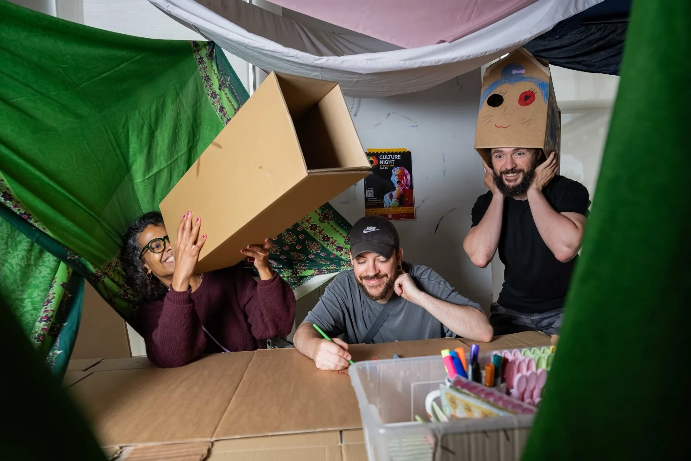
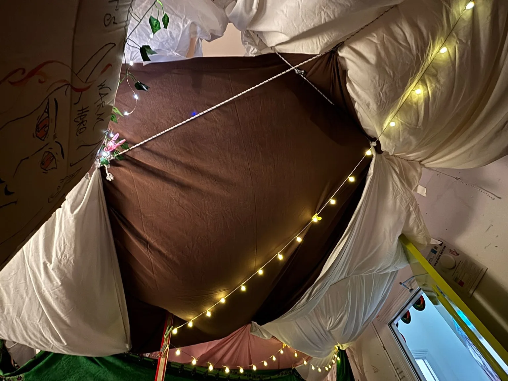
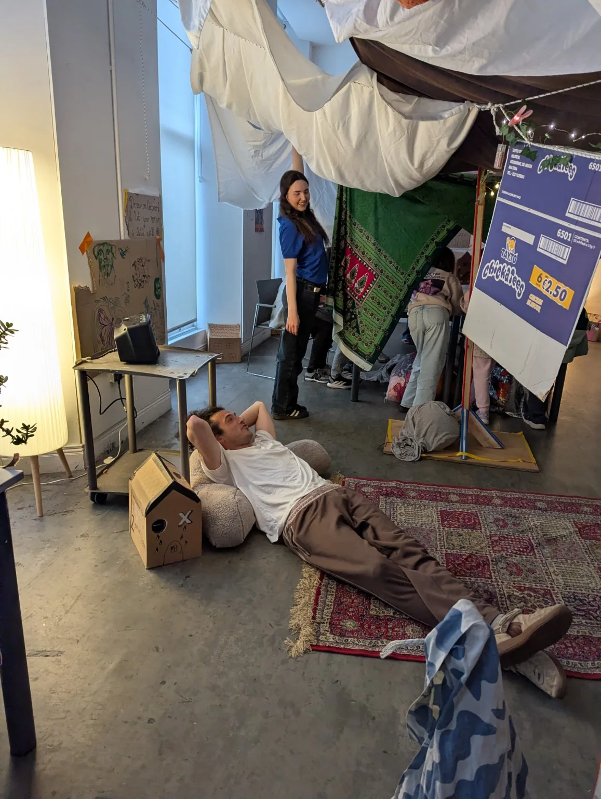
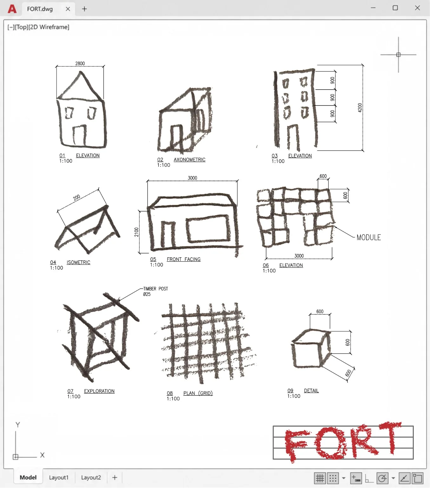
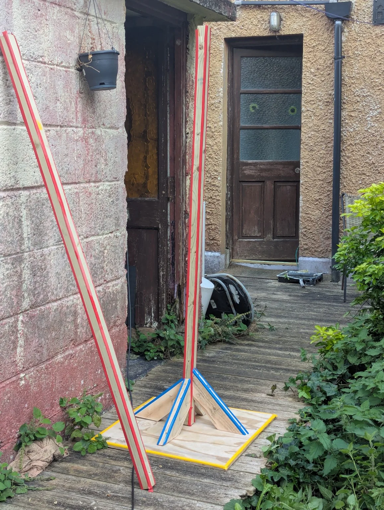
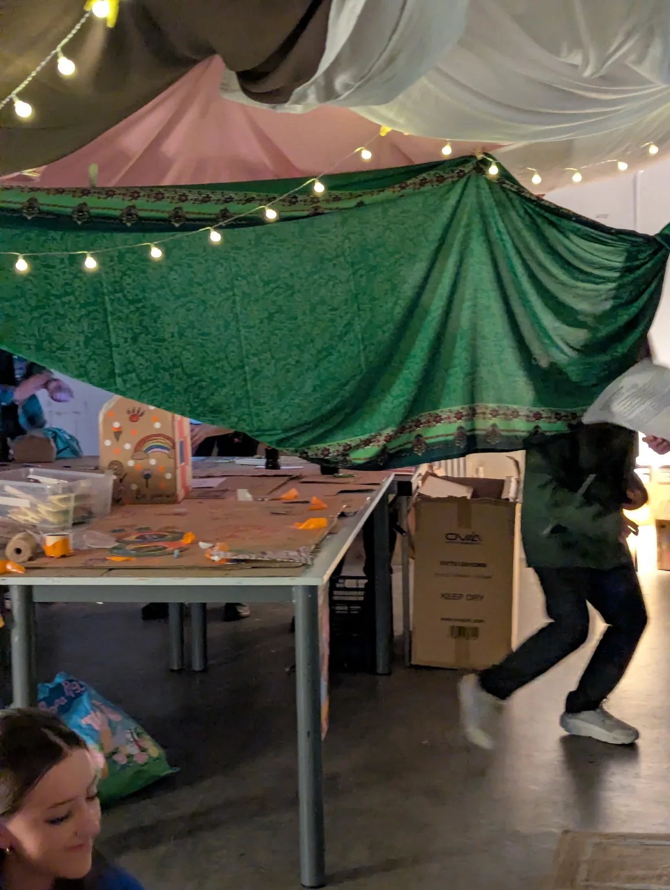
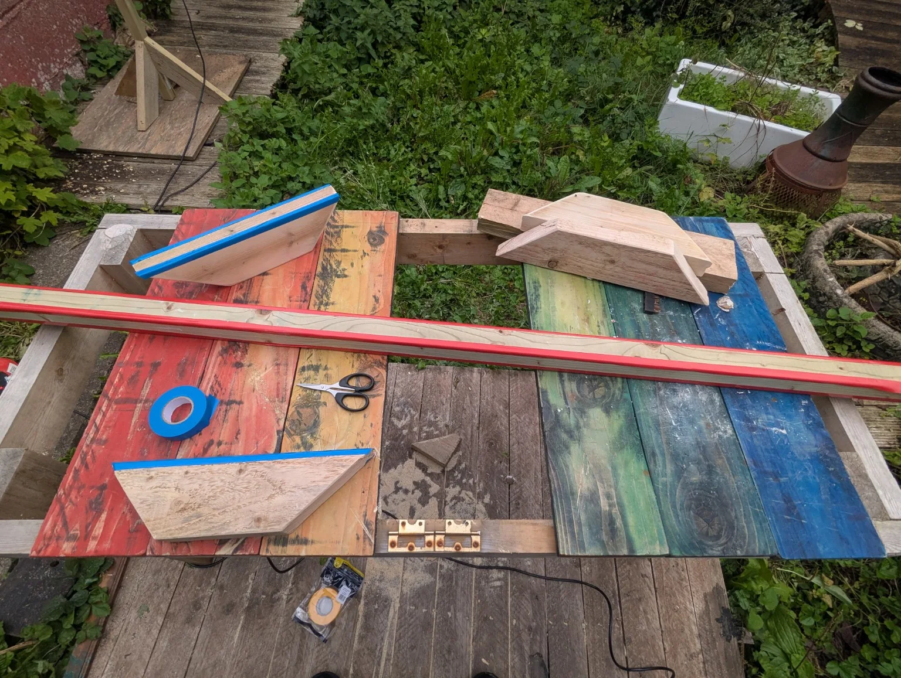

FORT
A temporary place to gather, play and make together.
Built
The question
How can a familiar room become an inviting, playful place for people to take part?
My contribution
Spatial design, physical prototyping, fabrication and installation.
The result
An immersive temporary environment for participatory activity during Culture Night.
FORT transformed an ordinary room into a playful, shared environment. Draped fabrics, warm lights and a series of handmade freestanding supports created an informal interior that invited visitors to settle in, experiment and make things together.
Rather than treating the installation as a finished object to be viewed from outside, FORT was designed as a place for participation. Visitors could occupy the space, make their own cardboard creations and contribute to the atmosphere through their presence and activity.
The project combined architectural studies with improvised, hands-on fabrication. Simple timber supports and layered textiles allowed the room to be reimagined without permanent changes to the building.






Interested in an installation, shared space or participatory event?
Explore art and collaboration